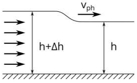
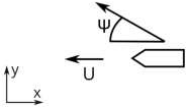

Y19 (2019) — English translation
Oscillations and waves are one of the most interesting and widespread branches of physics. Wave processes are found in all areas of mechanics, thermodynamics, and electrodynamics, and optics is entirely the science of waves. In this problem we will look at the familiar ship waves, which have some very interesting and non-obvious features. However, first we will consider the general properties of waves. The simplest type of waves propagating in a linear medium are plane monochromatic waves - that is, waves with a specific frequency and wavelength. The dependence of their amplitude on time and coordinates (we are currently considering the one-dimensional case) is described as follows: $$A(t{,}x)=A_0\cos\theta=A_0\cos(kx-\omega t+\varphi_0) $$
However, in reality, pure monochromatic waves never exist. In fact, waves propagate in wave packets - a superposition of many waves of similar frequencies. A wave packet, unlike a monochromatic wave, is localized in a certain region of space and propagates not with phase velocity, but with the so-called group velocity. The group velocity is usually interpreted as the speed at which the maximum amplitude envelope of a quasi-monochromatic wave packet moves. For example, consider a wave packet of two monochromatic waves close in frequency and wave vector: $$A(t{,}x)=A_0\cos(k_1x-\omega_1t-\varphi_1)+A_0\cos(k_2x-\omega_2t-\varphi_2) $$
The above-mentioned function $\omega(k)$ is called the dispersion relation for waves of a certain type and it is it that completely determines their behavior. That is why the study of any linear waves begins with finding this dependence.
The propagation of waves on water is determined by two physical effects: surface tension and the gravitational field of the earth. The first effect causes so-called capillary waves with a short wavelength, which we will not consider. Gravity leads to the existence of so-called gravitational waves. So, let's consider a wave propagating as in the figure. Consider that in the undisturbed region the water is stagnant, and in the disturbed region all the water moves at a certain speed.
The propagation of waves on water is determined by two physical effects: surface tension and the gravitational field of the earth. The first effect causes so-called capillary waves with a short wavelength, which we will not consider. Gravity leads to the existence of so-called gravitational waves. So, let's consider a wave propagating as in the figure. Consider that in the undisturbed region the water is stagnant, and in the disturbed region all the water moves at a certain speed.

If the water depth is much greater than the wavelength $\lambda$, then water effectively moves only in a layer of thickness $\lambda/2\pi$.
Now, knowing the phase velocity of the wave depending on the wavelength, we can easily find the dispersion relation $\omega(k)$, and from it, using result B2, the group velocity of the waves.
It is easy to see that for deep water waves the remarkable relation $v_g=v_{ph}/2$ is observed for waves of any wavelength. This leads to interesting effects. Let's consider ordinary ship waves that everyone could observe. It is known that they form a cone along the boundaries of which waves run. For emitters moving at a speed higher than the speed of wave propagation in a medium with linear dispersion, the formation of a Mach cone with an opening angle $\arcsin(c/v)$ is widely known.
However, with a nonlinear dispersion law, finding the angle becomes more difficult; its value is determined by the constructive interference of monochromatic waves. So, let us consider a plane monochromatic wave propagating at an angle $\psi$ to the source velocity. The water is standing.
However, with a nonlinear dispersion law, finding the angle becomes more difficult; its value is determined by the constructive interference of monochromatic waves. So, consider a plane monochromatic wave propagating at an angle $\psi$ to the source velocity. The water is standing.

Imagine that at some point in time a source emitted a wide range of waves. Let us consider a train with a narrow spectrum, such that its phase velocity corresponds to propagation at an angle $\psi$.
Now imagine that such “elementary waves” from point C3 are emitted at every moment of time.
Source: https://pho.rs/p/3052